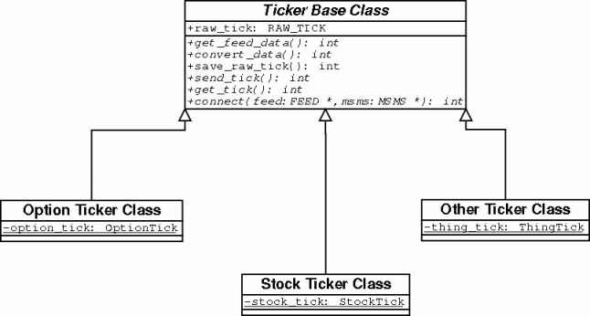

Real-Time Automated Trading System
[Specification]
Written by: Karl N. Redman
kredman@gmail.com
(First Draft)
1-14-2003
The Real-Time Automated Trading System consists of several software and hardware components which facilitate one of many strategies for the automatic trading of stocks and stock options. The Real-Time Automated Trading System will receive and process data sent from a proprietary Financial Market Data Provider, store appropriate data that will be used for the strategic trading of (primarily) options, and communicate with various Automatic Brokerage Entities for the purpose of executing orders that are deemed strategically viable by the Strategy Management process from within the Real-Time Automated Trading System.
The final version of the Real-Time Automated Trading System will allow traders to experiment with and monitor their own strategies (i.e. strategies less conventional than those deemed to be consistent by the operators of the system) through a Strategy Modeling Language interface. The Strategy Modeling Language interface will rely heavily upon financial industry and generic modeling language standards. It is a primary goal of the Real-Time Automated Trading System developers that the Strategy Modeling Language become standardized within the financial software industry and that it will go through a series of revisions before it's final version.
It is believed that the Real-Time Automated Trading System will have an advantage over other automatic trading systems as a result of its simplistic modular design, unique data lookup and data cross referencing programming routines, as well as it's use of standardized and optimized software interfaces. The overall software design of the system will be object oriented with an emphasis upon taking advantage of specific runtime platform (operating system) features. The object orientation of the application design for the system will aid both in quickening the pace of initial development as well as making code maintenance easier for developers in the future.
Table of Contents / Figures Index ...3
Market Strategy Management System ...9
Application Development Strategy...10
Quote Processor and Strategy Subsystems...11
Special Notes Regarding Development and Platform Considerations...18
Definitions (terms used throughout this document)...19
Special Note From The Author...24
The Real-Time Automated Trading System consists of three subsystems that perform data input translation from a proprietary feed, strategic processing of a market quote, and order processing to one or many brokers respectively.
[figure 1].
The Ticker Feed System will translate the data from one of several proprietary feeds into a tick object that will be received by the Market Strategy Management System. In turn, the Market Strategy Management System (MSM System) will store the tick object received from the Ticker Feed System (TF System) as one of several data types, determine the strategic validity of various market data -based on a strategy criteria and the tick object just received -and either initiate an order strategy or begin processing another tick object (effectively declining to take action in regards to the tick object it was processing).
If the Market Strategy Management System has determined that an order strategy should indeed be executed, the MSM System will direct the Order Processing System to process the order by sending an order message to a brokerage. For each order that the Order Processing System (OP System) sends to a brokerage on behalf of the MSM System, the MSM System waits for a reply from the OP System as regards the order that was generated from the tick object received, various market information, and various strategic criteria. The MSM System makes use of several matrices for the purpose of evaluating a trading entity and dynamically updates these matrices as new information is available.
The Ticker Feed System consists of at least one thread (hereafter referred to as a Ticker Object) that receives data from one or more proprietary feeds, saves the data for auditory (internal or external) purposes as a raw tick object, and sends the data to at least one Market Strategy Management System in a form (a tick object / tick message) that the MSM System can process. Each ticker object independently connects to its data feed source as well as its respective MSM System.
[figure 2]
It is expected that the ticker object will derive from a common abstract class and will utilize data types that are created for each type of MSM System. That is to say that, programmatically, a ticker object will be individually designed for each combination of feed and MSM System respectively. The advantages of this design are purely in the interest of overall system execution speed relative to processing time. An alternative design, however, may be considered in the future; whereby a single "feed management system" will process all incoming data from several sources and pass-off the respective data to the appropriate ticker objects.
[figure 3]
Furthermore, the modular design of keeping each ticker object independent from other ticker objects provides future expansion whereby ticker objects may be either integrated into or separated across several subsystems of the overall Real-Time Automated Trading System.
 [figure
4].
[figure
4].
The Ticker Base Class is an abstract class that contains the basic layout of all ticker classes. From the Ticker Base Class, Option, Stock, and other classes are derived. While the abstract class does not provide any functionality per-se, it does provide for a common interface that all Ticker Objects will adhere to. The Ticker Base Class also makes use of Feed and MSM System classes (for the individual types of feed and MSM systems -not shown below).

[figure 5]
Market Strategy Management System
The Market Strategy Management System is the most complex subsystem within the Real-Time Automated Trading System. The MSM System consists of several subsystems within as well and several matrices for storing data. As the MSM System performs operations that will execute strategies as well as performing many operations regarding its data storage, it will most likely require one complete computer system on its own to operate properly and efficiently. While other components of the Real-Time Automated Trading System may be later added to the MSM System, this is expected to be highly unlikely.
At the highest level of abstraction, the MSM System receives ticks from the Ticker Feed System, stores the data from ticks as quotes or other relevant information, performs a strategy evaluation on each quote for the purpose of discovering a viable trade. If a strategy evaluation deems that a trade should be made, the MSM System then executes an order, sending it as a message to the Order Processor, and waits for a response from the brokerage (through the OP System).
[figure 6]
Application Development Strategy:
The Market Strategy Management System makes use of threads and socket programming as well as POSIX interprocess communications throughout its application code. In particular, the interaction between the various parts (objects and threads) of the system are intended to operate asynchronously for the purpose of maximizing memory and CPU usage. The use of standardized programming interfaces, such as POSIX and Standard Template Library, will be strongly emphasized throughout the source code. All option, quote, and other objects will be stored in shared memory if possible and will be made available to various processes within the Market Strategy Management System.
POSIX Message Queues will be used for multiplexing purposes between objects and threads in such a way that each message queue will contain a message, from some object, that is read by a single available thread. Each thread that reads from a queue will act independently of all other threads in performing its actions (evaluating a quote and strategy, sending orders, etc).
Data is received from a Ticker Object within the Ticker Feed Manager by the Tick Processor within the MSM System. The Tick processor converts the tick message into its appropriate data type (an option/contract, a quote, stock information, etc), stores this data in an appropriate place, and, if the data is a quote, puts a quote message on the quote processor queue.
[figure 7]
Quote Processor and Strategy Subsystems:
Once a Quote Processor thread receives the quote message it performs a handoff of the data to a strategy processing object which uses various data and strategies to evaluate the quote for the purpose of deciding whether to execute an order strategy or not. If an order strategy is deemed appropriate, then the strategy-processing object will create an order strategy message and direct one of many strategy executioner threads to perform the operations specified by the order strategy message. The strategy executioner, in turn, sends orders to the Order Processing System as outlined by the order execution strategy it has received from the strategy processing object. Each strategy executioner thread waits and interactively performs operations relating to the responses it receives, as regards its order execution strategy, from the Order Processing System.

[figure 8]
The overall system design will be modular and make use of objects throughout. Each subsystem will behave independent of the others in a cooperative environment rather than a competitive one. In other words, it is intended that the various objects and threads within the MSM System behave in such a way as to make the best use of CPU and other hardware resources. In order to make a system that is as cooperative as possible some hierarchy of thread priority may be required.
[figure 9]
As the figure 9 of the section entitled ‘Object Overview’ shows, there are several matrices that the MSM System uses for purposes of decision making in regards to trading options. This section outlines the general layout of each of these matrices as well as their interaction within the overall process.
There are three primary Options Matrices that are used and updated by the MSM System:
Of the three matrices the Contract/Option matrix, Quote Matrix, and BBO Matrix are each indexed by root symbol and contract name and contain pointers to their respective objects (Contract, Quote, and BBO objects). Each matrix may be described as a two dimensional array whereby the first dimension is indexed by root symbol and the second dimension is indexed by contract name. Actual implementation of these matrices as object pointer containers, however, is quite different from merely an arraignment such as a two dimensional array.
As it is important to keep the usage of resources to a minimum, objects pointed to by any matrix will be dynamically allocated. As an array is populated with pointers to actual objects memory will be allocated in heap space (on the heap). Primarily objects which are pointed to by elements of the single dimension array will contain other arrays that relevant to the object being pointed to.
In addition to the matrices previously mentioned there are, or may be, several other matrices that will be utilized by the strategy processing objects within the MSM System. For one, it is expected that extraneous data that will influence a particular trading strategy will also have to be maintained. These other matrices are still being evaluated an, for now, are not part of this discussion.
The Contract Matrix will consist of a single dimension array of type RootSymbol pointers that are each indexed by their root symbol integer (the root symbol converted into an integer). The size of this array will be 27x27x27 elements (one element for each possible three-character root symbol, plus one extra element for testing purposes and system maintenance). Each RootSymbol object will contain several pieces of data related to a contract entity as well as one OptionContainer object. Each OptionContainer object will contain an array of approximately 27x27 contract objects that are indexed by contract name (one element for each possible two-character contract name). The purpose of this matrix is that it is meant to hold data that corresponds to individual option contracts. Only valid trading entities will contain pointers to objects in the Contract/Option Matrix. That is to say that if a symbol is not to be used for trading, then it’s corresponding element within the matrix does not contain a valid pointer to a RootSymbol object. The Contract Matrix is updated dynamically by a Matrix Management Subsystem of the MSM System but will also be populated at the time of system startup.
[figure 10]
The Quote Matrix is much like the Contract Matrix in the way that it is indexed. However, instead of the array being of type RootSymbol pointers it is of type QuoteSymbol pointers. Each QuoteSymbol object, like that of a RootSymbol object, contains an array of QuoteContainer pointers that are indexed by contract name.Each QuoteContainer has a single CompoundQuote object that is an array of Quote objects indexed by Exchange. In addition, each new quote that is created will automatically calculate the BBO for it’s respective contract and update the BBO matrix dynamically. The Quote Matrix is updated by the Tick Manager of the Market Strategy Management System.
[figure 11]
The BBO Matrix is again indexed by root symbol and contract name but contains pointers to objects of type BBOSymbol pointers. Each BBOSymbol will contain an array of BBO objects that are indexed by contract name. Each BBO object will contain information that is relevant to it’s respective contract and. The BBO Matrix is dynamically updated and maintained by Quote objects of the Quote Matrix.
[figure 12]
The Order Processing System receives order messages from the Market Strategy Management System and places orders with various brokerages on behalf of the overall Real-Time Automated Trading System. No more information is available at this time in regards to the operations and Application structure of this system.
Special Notes Regarding Development and Platform Considerations
The choice to use GNU/Linux for development for the Real-Time Automated Trading System is based on several criteria which influence any software development project. For one, Linux is a cheap, relatively standardized interface from which to develop software that is easily portable to other UNIX type operating systems (such as AIX, SOLARIS for Intel or SPARC, HPUX, SCO, B/OS, and QNX). In order to maintain the widest variety of platform independence it has been determined that the Real-Time Automated Trading System will be developed for the GNU/Linux operating system. While Microsoft Windows may be a viable option for the development of this system, there are few financial data providers who provide consistent feeds to the Windows operating system and it's interfaces. Furthermore, in the event that the Real-Time Automated Trading System should be packaged for sale in the future, the most likely interface for such an application system is most often expected to be made available on UNIX type operating systems. It is certainly understood that the Real-Time Automated Trading System may migrate from GNU/Linux to another UNIX platform in the future.
In addition to the aforementioned reasons for developing the Real-Time Automated Trading System on GNU/Linux there are technical considerations that are outlined (briefly) as follows:
-GNU/Linux offers compatibly across at least 6 different types of CPUs.
-GNU/Linux offers (for the most part) compatibility with most UNIX type operating systems
-The GNU/Linux kernel (the core of the operating system) has been optimized by peer review (of several hundred people) over the coarse of at least 10+ years.
-GNU/Linux offers a development environment whereby developers are empowered to make changes to the core operating system that may improve the overall performance of their applications.
-GNU/Linux uses the GNU, gcc/egcs compiler -the fastest compiler in the world (which is an aid during the engineering portion of any application software development cycle).
-Standard development practices for GNU/Linux have been established by peer review over the coarse of the last 10+ years. It is not uncommon for a GNU/Linux developer to be adept at utilizing the various tools provided by the GNU development community (i.e. applications such as emacs, automake and autoconf, vi -or respective clones, and CVS).
-The cost of developing for GNU/Linux is minimal in contrast to other proprietary UNIX or MS Windows systems and provides a base from which to target specific platforms in the future.
-GNU/Linux is a "Hackers Platform" whereby persons all over the world have contributed to its standardization and functionality (i.e. POSIX, STL, C++, PERL, PHP, HTML, WML, SOCKET, IPC -except condition variables, Semaphore, Mutex, and Shared Memory standards compliance).
Automatic Brokerage Entity:
An automatic trading system run by a broker. The job of this system is to process orders from the broker’s clients.
Communication media:
Any media which is used as a bridge between two systems (i.e. Ethernet cable, IPC, any other software or hardware connection)
compound_quote:
{ref. Quote compound_quote [NUM_EXCHANGES]}
An Array which contains Option objects; one for each exchange where the option might trade.
Contract:
see Option object
Contract Name:
The Name of a contract as represented by the last two characters of a symbol used to identify a particular contract. These two characters are used throughout the Real-Time Automated Trading System in the form of an integer for the purpose of fast data referencing within arrays.
Feed:
Communication media that transfers data from some source to a Ticker object within the Ticker Feed System. Types of data that may be sent across this communication media may be one of the following type s: Option, Stock, timestamps, and unemployment information).
Financial Market Data Provider:
A data vendor who provides a stream of real-time financial market data (such as stock or option quotes).
interprocess communications:
A term used by software engineers that refers to a communication mechanism (or media) that is internal to a particular computer system and is managed by the Operating System.
Maintenance Ticker:
A special Ticker object that processes and sends maintenance data to the Matrix Manager System. This data is then used to update various matrices within the overall Trading System.
Market Strategy Management System:
A subsystem of the Real-Time Automated Trading System that performs strategic analysis of quotes in contrast to their respective contract information as well as other data. The MSM System is responsible for processing ticks and generating order strategies.
market quote:
A Quote that is generated by a market.
Matrix Manager:
A process which monitors the Maintenance Ticker for data which is used to update one of several matrices within the Trading System.
Object Oriented:
A term used by software engineers in reference to a particular set of software design heuristics.
Option object:
An Object which contains option information. This object will be indexed by exchange.
Option Matrix:
A matrix of option information where each contract is indexed by its Root Symbol object along with its respective Contract Name and trading exchange.
option/contract:
See option object.
Order Manager object:
An object that receives Order Messages from the Strategy Management System at the Order Processing System level of the overall Trading System. This object's purpose is to communicate with individual brokers on behalf of the Trading system.
Order Message:
A message sent from the Send Order Manager of the Strategy Management System to the Order Processor System.
order processing:
A reference to the act of the Real-Time Automated Trading System, the Order Processing sub-System in particular, processing an order –sending an order to an Automatic Brokerage Entity.
Order Processor System:
The system of objects and processes which manages the communication between the Strategy Management System and Automatic Brokerage Entities.
Order Reply Message:
A reply message sent from the Order Processor System to the Send Order Manager of the Strategy Management System.
order strategy:
The concept of performing one or more order processes in an effort to make the best possible trade.
POSIX:
A term used by software engineers that refers to a set of standards put forth by the EEE.
Queue:
A type of interprocess communications mechanism that provides fast multiplexing capabilities of various types of data.
Quote:
An abstract data-set consisting of elements that are used to create a Quote Object
Quote object:
An object which contains one valid quote for a particular options contract from a particular exchange.
Quote Container:
An object which contains an array of quotes (a Compound Quote object) indexed by a constants which represent exchanges that the option for the quotes are traded on.
Quote Matrix:
A Matrix which contains Quote Containers and their respective data sets (i.e. each Quote Container contains one Compound Quote Object.
Quote Message:
A message sent from the Tick Manager of the Strategy Management System to one of many threads (Quote Processors) that will determine if a quote should be utilized for a trade.
Quote Processor:
A thread object that receives a Quote Message from the Tick Manager. Each of these threads will perform
raw tick:
A data object that is a Real-Time Automated Trading System representation of data sent from a feed.
root symbol:
The portion of an option symbol that represents the basic underlying symbol.
Runtime Platform:
The runtime environment for an application which includes, but is not limited to, CPU type, operating system, and programming language.
Socket:
A software mechanism that provides a common interface for programming client/server applications. In particular, sockets provide an interface for the communication between applications on either the same or different physical computer systems.
Stock:
An abstract trading entity.
software and hardware components:
Various parts of a computer system.
stock matrix:
A matrix within the Real-Time Automated Trading System (the Market Strategy Management System) that contains stock quote information.
Strategies:
Any number planned actions as regards the potential trading of options.
strategic processing:
The act of processing one or more strategies.
strategic processing object:
An object, within the MSM System, that evaluates a quote against market and contract information and makes a decision as to whether to execute a strategy.
strategy criteria:
The criteria used by a strategic processing object.
Strategy executioner:
A thread within the MSM System that performs the necessary operations (sending orders to the Order Processing System and awaiting responses, etc.) to carry out an order strategy.
Strategy Management System:
A reference to the operations of the MSM System that perform the various operations in evaluating and carrying out various strategies.
Strategy Matrix:
A Matrix that contains various data that is used by a strategy processing object to evaluate a quote.
Strategy Modeling Language:
Thread:
A term used by software engineers that refers to a subprocess within a process (also known as a lightweight process).
Tick:
An abstract term that refers to a piece of data that is sent from an exchange in reference to some trading entity.
Tick Handler:
A thread within the MSM System that receives messages that contain tick objects from the Ticker Feed System and distributes the tick object data.
Tick Object:
An object that contains some subset of data received from a feed.
Ticker Feed Object:
An object/process/thread within the Ticker Feed System that processes data from a feed and transmits the data in a form that is appropriate for it’s receiving MSM System.
Ticker Feed System:
A subsystem of the Real-Time Automated Trading System that manages Ticker Feed Objects.
Trader:
An individual who’s job it is to trade options.
Trading System:
Underlying Symbol:
This specification was developed and written using the following software on the Suse 8.0 distribution GNU/Linux Operating System:
dia -a GNU diagram editor
gimp -graphical image editor
emacs -a general purpose GNU editor
abiword -a MS Word style document editor (which can save files for MS Word `97)
M.S. Word `97 -a general document editor for Microsoft Windows `95+